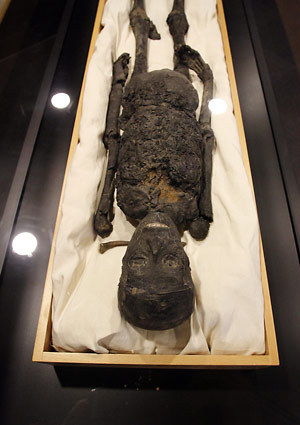
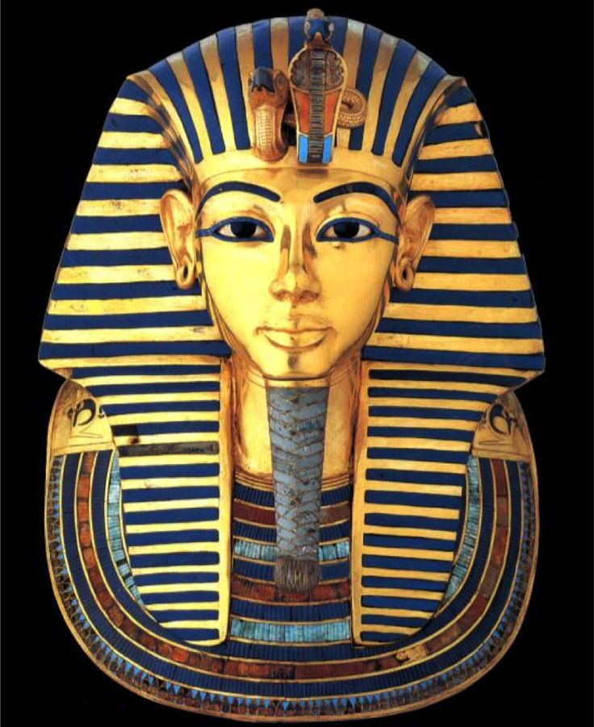
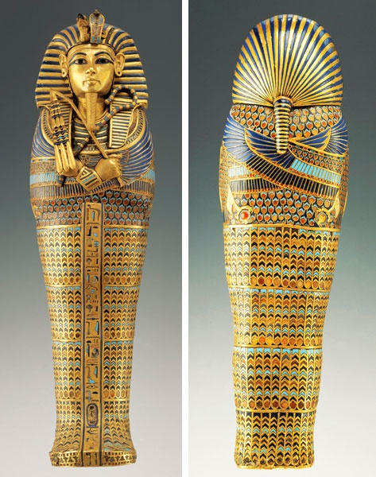
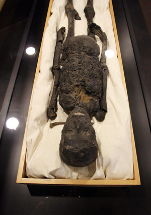
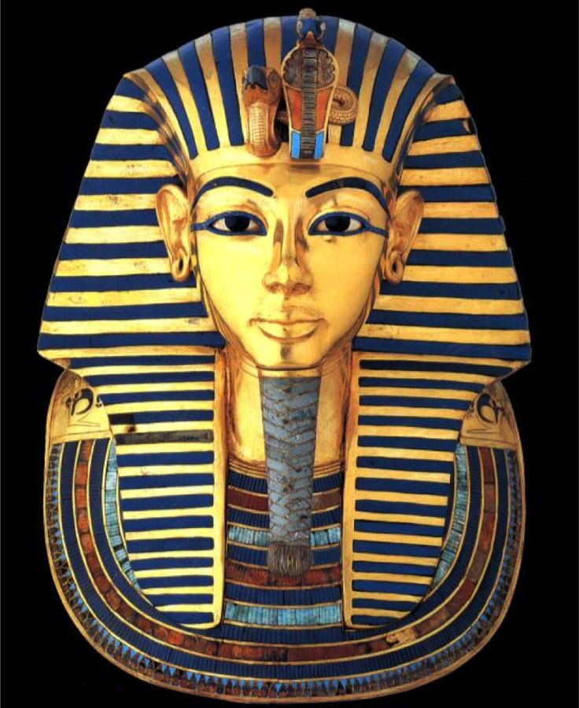
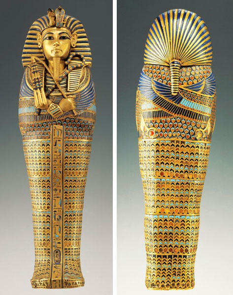

Classroom
Pharaohs
Akhenaten was an ancient Egyptian pharaoh who reigned about 3,500 years ago. He made some major, but rather short-lived changes to various aspects of ancient Egyptian culture, the most notable one being his religious revolution. Akhenaten also made major changes in the ancient Egyptian art style, and presented himself in a very different manner from any of his predecessors. Akhenaten ruled in the eighteenth dynasty, which seemed to be an age of revolution in ancient Egypt. Only a few reigns before his had been the reign of Hatshepsut, the most famous (but not the only) female pharaoh. Akhenaten's strange appearance and mysterious behavior, as well as his connection with Nefertiti and with the ill-fated "boy king" Tutankhamen, have made him the subject of much passion and controversy in the last century or so. Akhenaten is all things to all people--to some he was a fanatical lunatic, to some he comes across as a strange, eccentric young man whose behavior was strongly influenced by his mother, to others he was a Christ-like visionary and a mentor of Moses, and to still others he was simply someone who happened to be at the wrong place at the wrong time and who really had nothing to do with the dramatic reformations that went on during his reign.
A daughter of King Thutmose I, Hatshepsut became queen of Egypt when she married her half-brother, Thutmose II, around the age of 12. Upon his death, she began acting as regent for her stepson, the infant Thutmose III, but later took on the full powers of a pharaoh, becoming co-ruler of Egypt around 1473 B.C. As pharaoh, Hatshepsut extended Egyptian trade and oversaw ambitious building projects, most notably the Temple of Deir el-Bahri, located in western Thebes, where she would be buried. Depicted (at her own orders) as a male in many contemporary images and sculptures, Hatshepsut remained largely unknown to scholars until the 19th century. Hatshepsut was only the third woman to become pharaoh in 3,000 years of ancient Egyptian history, and the first to attain the full power of the position. Cleopatra, who also exercised such power, would rule some 14 centuries later.
One of the most mysterious and powerful women in ancient Egypt, Nefertiti was queen alongside Pharaoh Akhenaten from 1353 to 1336 B.C. and may have ruled the New Kingdom outright after her husband’s death. Her reign was a time of tremendous cultural upheaval, as Akhenaten reoriented Egypt’s religious and political structure around the worship of the sun god Aten. Nefertiti is best known for her painted sandstone bust, which was rediscovered in 1913 and became a global icon of feminine beauty and power. Nefertiti may have been the daughter of Ay, a top adviser who would go on to become pharaoh after King Tut’s death in 1323 B.C. An alternate theory suggests she was a princess from the Mittani kingdom in northern Syria. She was her husband’s Great Royal Wife (favored consort) when he ascended the throne in Thebes as Amenhotep IV. In the fifth year of his reign, he displaced Egypt’s chief god Amon in favor of Aten, moved the capitol north to Amarna and changed his name to Akhenaten, with Nefertiti taking on the additional name “Neferneferuaten”—her full name meaning “Beautiful are the beauties of Aten, a Beautiful Woman has come.” The beauty of the iconic Nefertiti bust may only be skin deep. CT scans in 2009 revealed that underneath the surface of smooth painted stucco is the sculptor Thudmose's more realistic limestone carving of a woman with wrinkled cheeks and a bump on her nose.
Ramesses II (alternative spellings: Ramses, Rameses and known to the Egyptians as Userma’atre’setepenre, which means 'Keeper of Harmony and Balance, Strong in Right, Elect of Ra’, known also as Ozymandias and as Ramesses the Great) was the third pharaoh of the 19th Dynasty. Ramesses lived to be 96 years old, had over 200 wives and concubines, 96 sons and 60 daughters, most of whom he outlived. So long was his reign that all of his subjects, when he died, had been born knowing Ramesses as pharaoh and there was widespread panic that the world would end with the death of their king. There is virtually no ancient site in Egypt which does not make mention of Ramesses the Great. Ramesses was the son of Seti I and Queen Tuya and accompanied his father on military campaigns in Libya and Palestine at the age of 14. By the age of 22 Ramesses was leading his own campaigns in Nubia with his own sons and was named co-ruler with Seti. With his father, Ramesses set about vast restoration projects and built a new palace at Avaris. After the death of Seti I in 1290 BCE, Ramesses assumed the throne and at once began military campaigns to restore the borders of Egypt and ensure trade routes.
King Tutankhamen (or Tutankhamun) ruled Egypt as pharaoh for 10 years until his death at age 19, around 1324 B.C. Although his rule was notable for reversing the tumultuous religious reforms of his father, Pharaoh Akhenaten, Tutankhamen’s legacy was largely negated by his successors. He was barely known to the modern world until 1922, when British archaeologist Howard Carter chiseled through a doorway and entered the boy pharaoh’s tomb, which had remained sealed for more than 3,200 years. The tomb’s vast hoard of artifacts and treasure, intended to accompany the king into the afterlife, revealed an incredible amount about royal life in ancient Egypt, and quickly made King Tut the world’s most famous pharaoh.
King Tut was tall but physically frail, with a crippling bone disease in his clubbed left foot. He is the only pharaoh known to have been depicted seated while engaged in physical activities like archery. Traditional inbreeding in the Egyptian royal family also likely contributed to the king’s poor health and early death. DNA tests published in 2010 revealed that Tutankhamen’s parents were brother and sister and that his wife, Ankhesenamun, was also his half-sister. Their only two daughters were stillborn.
Because Tutankhamen’s remains revealed a hole in the back of the skull, some historians had concluded that the young king was assassinated, but recent tests suggest that the hole was made during mummification. CT scans in 1995 showed that the king had an infected broken left leg, while DNA from his mummy revealed evidence of multiple malaria infections, all of which may have contributed to his early death.
After he died, King Tut was mummified according to Egyptian religious tradition, which held that royal bodies should be preserved and provisioned for the afterlife. Embalmers removed his organs and wrapped him in resin-soaked bandages, a 24-pound solid gold portrait mask was placed over his head and shoulders and he was laid in a series of nested containers—three golden coffins, a granite sarcophagus and four gilded wooden shrines, the largest of which barely fit into the tomb’s burial chamber.
Because of his tomb’s small size, historians suggest King Tut’s death must have been unexpected and his burial rushed by Ay, who succeeded him as pharaoh. The tomb’s antechambers were packed to the ceiling with more than 5,000 artifacts, including furniture, chariots, clothes, weapons and 130 of the lame king’s walking sticks. The entrance corridor was apparently looted soon after the burial, but the inner rooms remained sealed. The pharaohs who followed Tut chose to ignore his reign, as despite his work restoring Amun, he was tainted by the connection to his father’s religious upheavals. Within a few generations, the tomb’s entrance had been clogged with stone debris, built over by workmen’s huts and forgotten.


 




